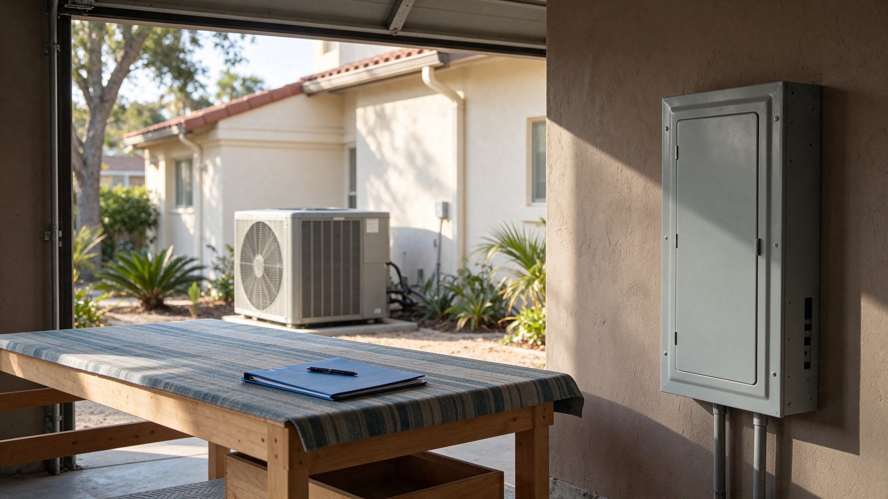

For a Tampa homeowner comparing an AC replacement proposal, the useful question is not “Do new air conditioners need new panels?” It is “What does this particular system require, and what can my installed electrical supply support?”
Why a panel upgrade is not automatic
Equipment age alone does not establish a need to replace the panel. Neither does a change in system brand or the general claim that modern equipment has different requirements. The exact model and the existing installation need to be evaluated together.
ENERGY STAR says the extent of electrical upgrades varies by home and project. It also notes that switching from central AC to a Heat Pump generally should not require an electrical upgrade. That is helpful context, not a determination for an individual property. ENERGY STAR recommends a licensed electrician’s review of panel capacity and planned appliances. [1]
Older and newer Tampa homes can present different conditions. A North Tampa address, by itself, does not establish that a panel upgrade belongs in the replacement budget.
Circuit work, panel replacement, and service upgrades are different
Equipment circuit work concerns the electrical path serving the air-conditioning equipment. A proposal might include changes to that circuit, its protective device, or the disconnect near the equipment. Such work does not, by itself, mean the whole panel needs replacement.
Panel work concerns the distribution equipment that supplies circuits throughout the home. A recommendation should identify the relevant limitation or condition, rather than use “electrical upgrade” as a catchall description.
A service upgrade concerns the supply coming into the home. ENERGY STAR distinguishes this from a panel upgrade and notes that service work may involve the utility. Replacing a panel does not automatically mean the incoming service is being upgraded; the two scopes need separate explanations. [1]
Ask the contractor which category applies. If several categories are included, request an explanation of how each relates to installing the proposed AC equipment.
Match the equipment requirements to the installed supply
The assessment should use the proposed equipment’s nameplate information and installation instructions, not an assumption based on the old unit. Outdoor and indoor components can have different electrical requirements, so the proposal should identify the components being evaluated.
Two label terms illustrate why a breaker number alone is not enough. Minimum circuit ampacity relates to the conductor capacity the equipment requires. Maximum overcurrent protection relates to the protective device. These ratings serve different purposes; they are not interchangeable measures of the system’s electrical demand. [2]
Model-specific instructions can also require interpretation. HVAC School discusses why label ratings and breaker recommendations need context and why unclear manufacturer guidance may warrant clarification from the manufacturer. [3] Homeowners do not need to resolve that technical question themselves.
Instead, request the assessment’s conclusion: what requirement was checked, what installed condition does not meet the proposed equipment’s needs, and what work addresses it. Leave panel access and electrical evaluation to the qualified professionals handling the project.
What the written electrical scope should explain
A useful quote connects the added work to a finding. “Panel upgrade required” is a conclusion, not enough detail to compare proposals. Ask for these items in writing:
- The specific finding: the documented capacity limitation, equipment condition, or installation requirement driving the recommendation.
- The proposed equipment: model identification for the components whose electrical requirements were assessed.
- What stays and what changes: whether the existing circuit, disconnect, panel, and incoming service are retained or included in the work.
- Who performs and coordinates it: the electrical provider and who handles scheduling, any required approvals, and utility coordination if applicable.
- What the price includes and excludes: a distinct electrical scope, whether it is included in the replacement total, and how unresolved findings or additional work will be addressed.
These details help distinguish a limited circuit change from a whole-panel or service project. They also make it easier to ask why two proposals differ. For the rest of the project, use the broader replacement quote checklist; this electrical decision is only one part of the overall replacement cost.
If the reason remains unclear, ask for an electrical evaluation before approving that portion of the project. A second proposal is more informative when it evaluates the same equipment and documents the same existing conditions, rather than comparing a vague allowance with a defined scope.
Keep optional future electrical projects separate
A homeowner may choose to plan for an electric vehicle charger, additional appliances, a Heat Pump, or a Mini Split. Future plans can be relevant to an electrical assessment, but optional preparation should not be presented as mandatory work for today’s AC replacement.
Ask for separate descriptions of what the selected system needs now and what is recommended for future flexibility. Likewise, thermostat inclusion and control changes are a separate scope question, not evidence that the panel needs upgrading.
An active electrical symptom is a different question
A breaker that repeatedly trips needs assessment of the existing problem; it does not prove a replacement AC requires a panel upgrade. See the separate discussion of AC breaker trips rather than treating a new panel as the default answer. An AC repair evaluation and a proposed replacement’s electrical assessment address different questions, even when both occur during the same visit.
Frequently asked questions
Does every AC replacement need a new electrical panel?
No. The proposed equipment and installed electrical supply determine the work needed. Ask for the identified reason before treating a panel upgrade as a required replacement cost.
Can electrical work be needed without replacing the panel?
Yes. Changes to the equipment circuit or disconnect may be a separate scope. The quote should state which components are being changed and which are staying, rather than bundle everything under “electrical upgrade.”
What should I ask when a quote includes a panel upgrade?
Ask what finding requires it for the selected equipment, whether incoming service work is also included, who performs the work, and what the price excludes. Request a separate line for optional future improvements.
Editorial Source Review & Publisher
Published by On The Way Heating & Air, a local, family-rooted company serving Tampa and North Tampa. This editorial source review distinguishes electrical work scopes during AC replacement; it is not an electrical design or a remote diagnosis. Dustin Miller began working in HVAC with his father in 2006 and has helped build several service companies. No customer incident, reading or personal inspection is claimed.
Sources
- ENERGY STAR: Make Your Home Electric Ready — Electrical upgrades vary by home; licensed electrician review and the distinction between panel and utility service upgrades. No pricing or expired incentive claims used.
- InterNACHI: Inspecting Oversized AC Breakers on Small-Gauge Wires — Equipment nameplate minimum circuit ampacity and overcurrent protection have different functions; no wire-sizing examples used.
- HVAC School: Why the Breaker Size May Be Lower than the MCA (2025) — Model-specific electrical rating nuances and manufacturer clarification; not a homeowner wiring prescription.